가맹본부 예치금
21,500,000원
- 가맹비11,000,000원
- 최초 교육비5,500,000원
- 계약이행보증금5,000,000원
부가세 포함 금액입니다. 계약이행보증금은 부가세가 없고 계약 종료 시 반환됩니다. 가맹금은 서울보증보험 가맹점 피해보상보험으로 예치됩니다.
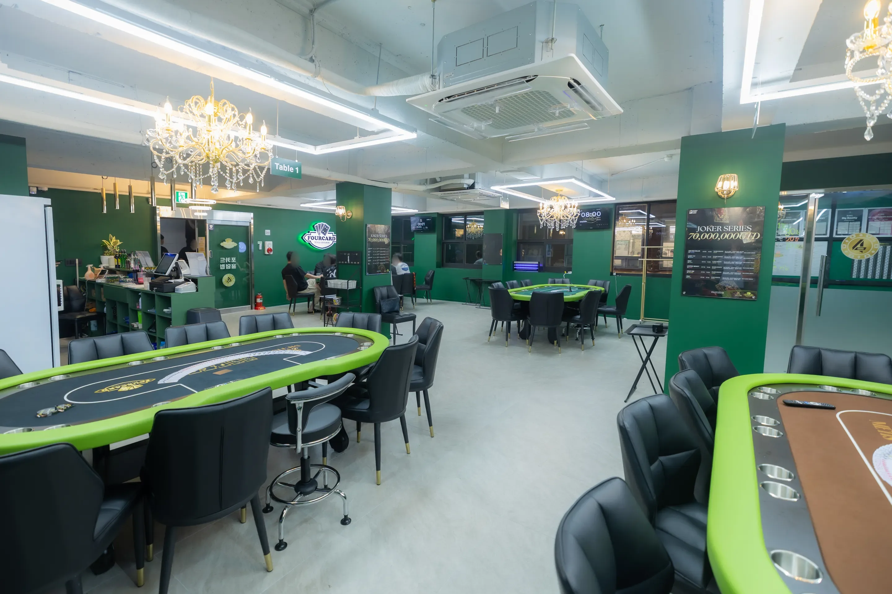
포카드가 만드는 홀덤 라운지의 새로운 기준
정보공개서에 등록된 창업비용과 계약 조건,
공개 매출까지 숫자로 먼저 확인하실 수 있습니다.
숫자를 먼저 공개하는 홀덤 라운지 프랜차이즈, 포카드
서울
대구
경북
부산
대전
경기
경남
충남
2026년 8월 가맹본부 공식 자료 기준입니다. 전국 8개 지역 29개 매장 가운데 26개가 운영 중이고 3개 매장이 오픈을 준비하고 있으며, 누적 개설 기준으로는 30호점을 돌파했습니다. 출점 가능 지역은 상담에서 안내합니다.
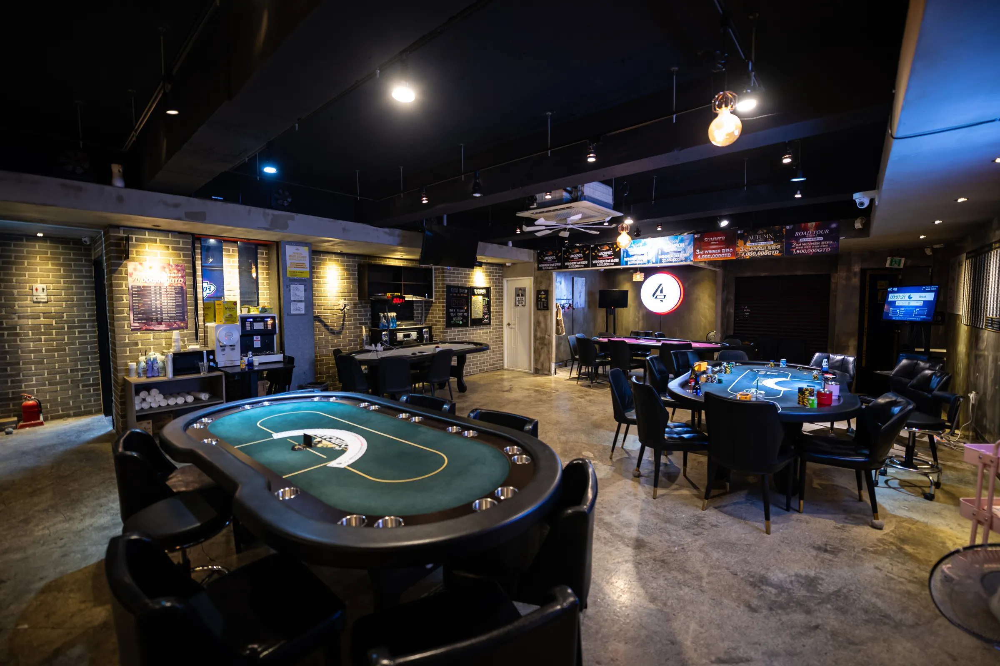
STANDARDIZED SYSTEM
포카드는 표준 운영 기준을 바탕으로 매장의 운영 효율과 안정성을 높일 수 있도록 지원합니다.
현장에서 반복되는 진행 순서와 역할을
실제 운영 흐름에 맞춰 익힙니다
첫 방문 고객 안내부터 테이블 참여까지
응대 흐름을 정리해 전달합니다
영업 종료 후 확인할 마감 정산과
반복 업무의 순서를 준비합니다
테이블 배치, 직원 이동과 고객 시야를
함께 확인해 동선을 잡습니다
현금 베팅과 환전 없이 운영합니다
청소년 출입 제한과 연령 확인이 기준입니다
지역과 점포에 맞는 신고·운영 기준을
사전에 확인해 안내합니다
카드·칩 등 초도 물품과 테이블, 의자를
매장 규모에 맞춰 공급합니다
예약과 회원 기록을 가맹점 운영 시스템에서
매장이 직접 관리합니다
월 계속가맹금 880,000원, 계약기간 5년
법정 숙려기간 14일을 계약 전에 확인합니다
세부 인허가와 운영 조건은 지역 및 점포에 따라 달라질 수 있으며, 본사 지원 범위와 계약 조건은 FOURCARD 정보공개서(등록번호 20211907)와 가맹계약서에 기재된 내용을 기준으로 합니다.
등록번호 20211907 기준 금액을 그대로 안내
본사가 일정을 편성하고 랭킹을 기록
오픈 이후에도 함께하는 운영 점검
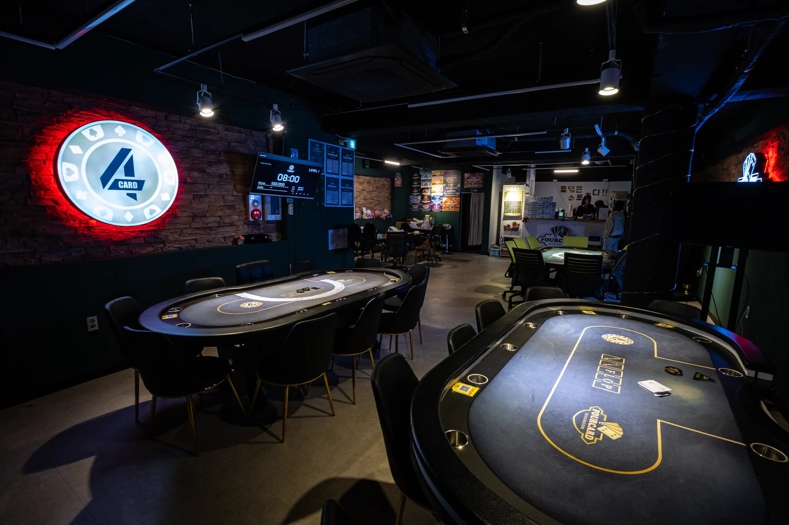
직영점 현장 교육과 운영 매뉴얼을 통해 오픈 전 필요한 운영 노하우를 제공합니다
본사는 운영 전반을 함께 지원합니다
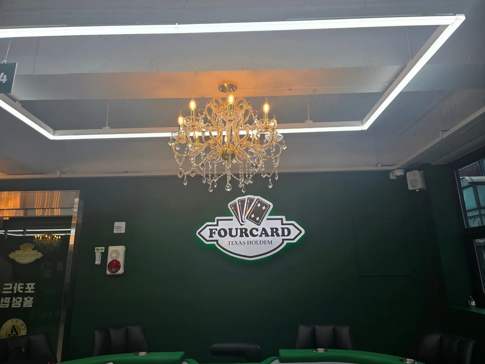
담당자가 현장 조사와 시장 분석을 진행하고 후보 점포 조건을 확인합니다.
게임 진행, 고객 응대와 마감 정산을 실제 매장 흐름에 맞춰 준비합니다.
오픈에 필요한 초도 물품과 테이블, 의자, 브랜드 사인을 공급합니다.
초기 운영에서 확인된 문제와 개선 항목을 정리해 운영에 반영합니다.
본사 지원 범위는 FOURCARD 정보공개서(등록번호 20211907)와 가맹계약서에 기재된 내용을 기준으로 합니다.
실제 운영 중인 매장 사진으로 사인과 테이블 중심 공간을 확인하실 수 있습니다
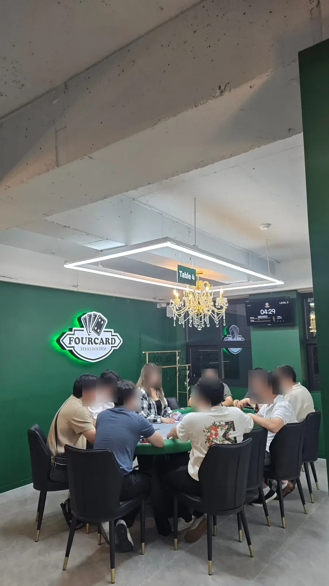
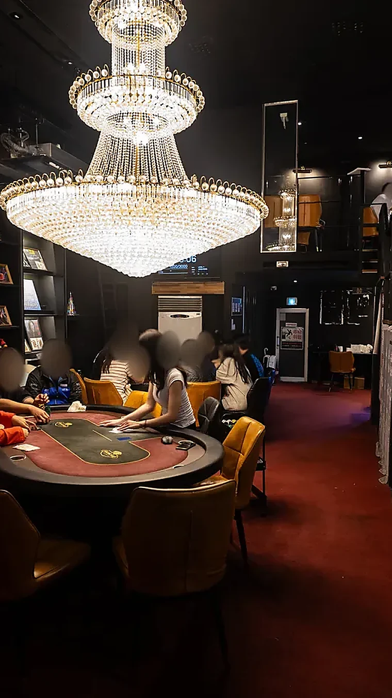
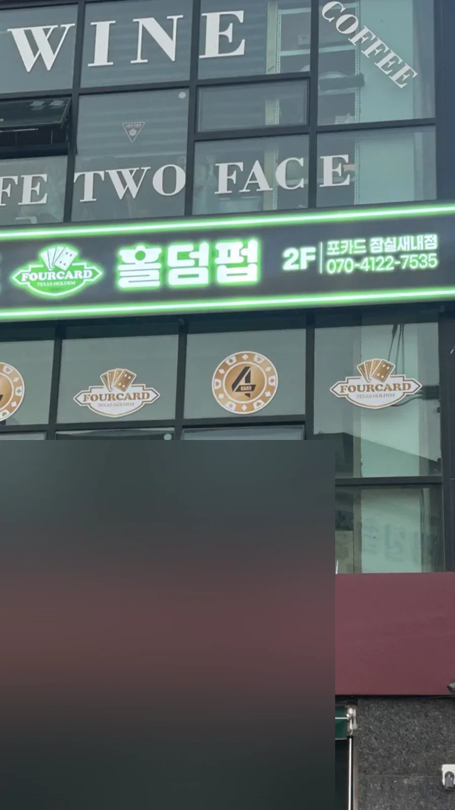
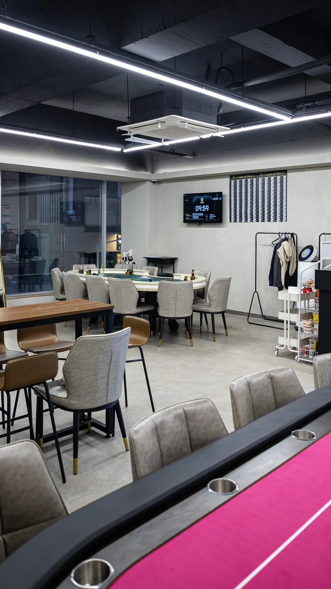
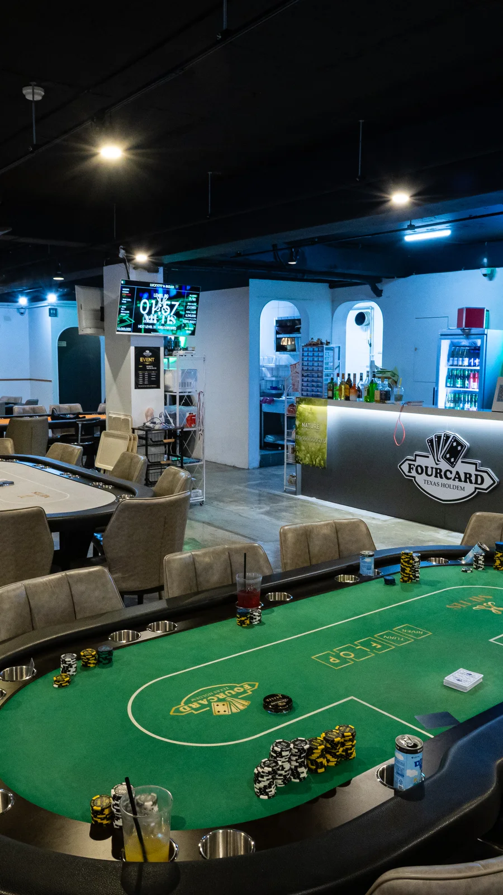
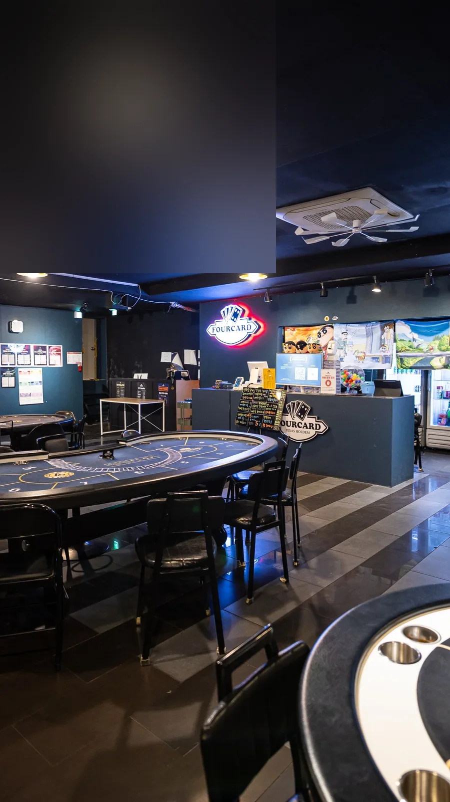
일정 편성과 랭킹 기록을 본사가 맡아 매장 부담을 줄입니다
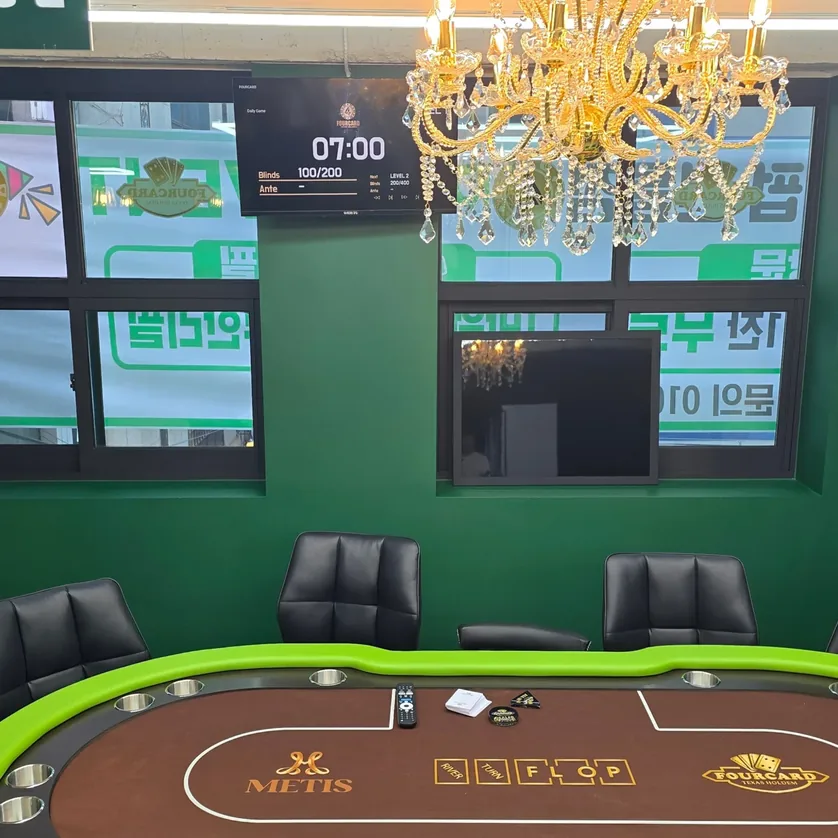
본사가 대회 일정을 편성하고 진행 방식을 정리해 매장에 전달합니다.
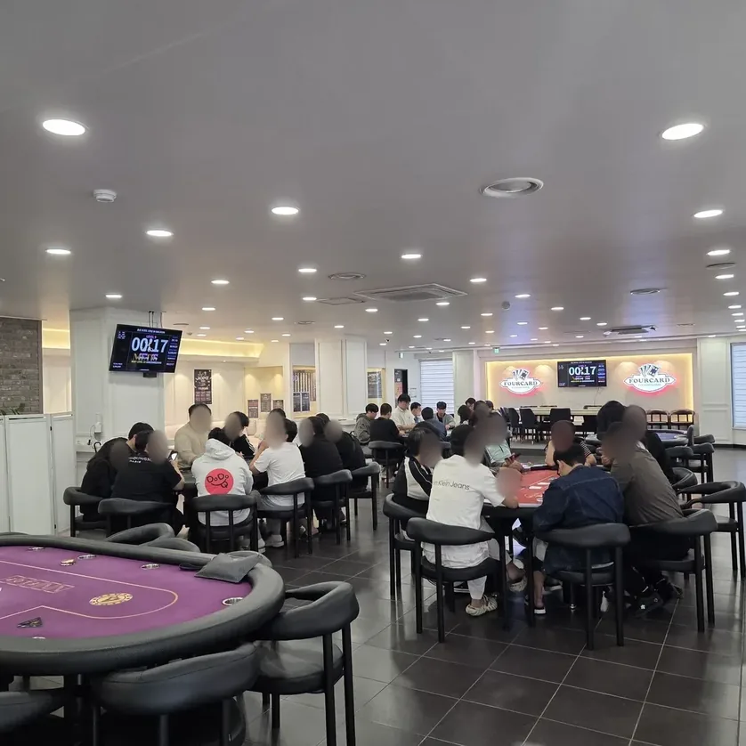
참여 기록이 랭킹으로 쌓여 다음 방문의 이유가 됩니다. 대회 결과와 일정은 공식 채널로 안내되어 매장이 함께 노출됩니다.
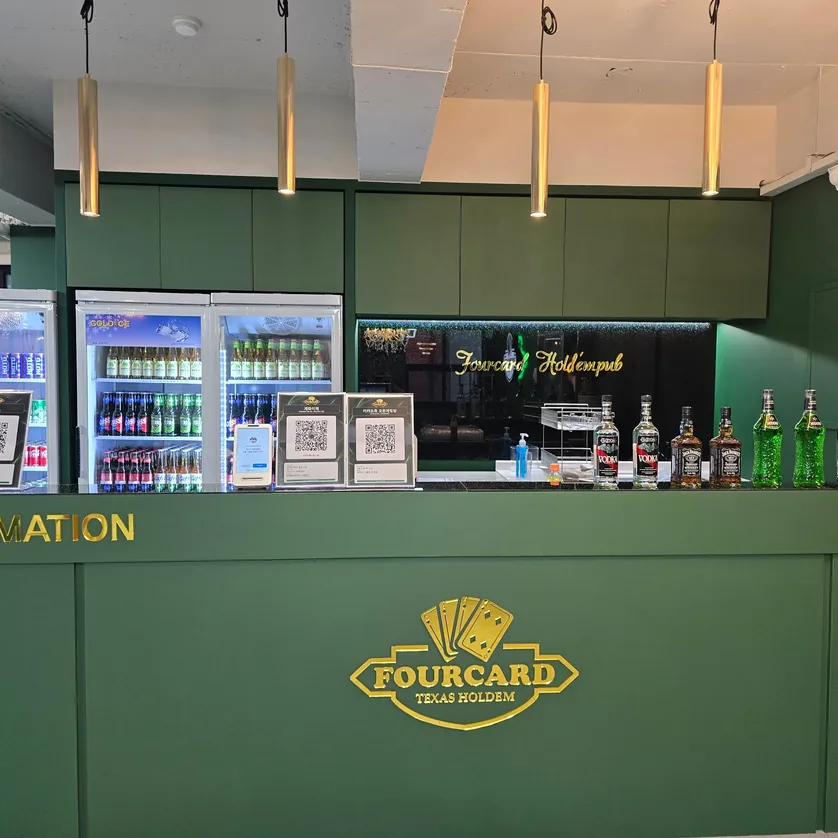
가맹점 운영 시스템으로 예약과 회원 기록을 매장에서 직접 관리합니다.
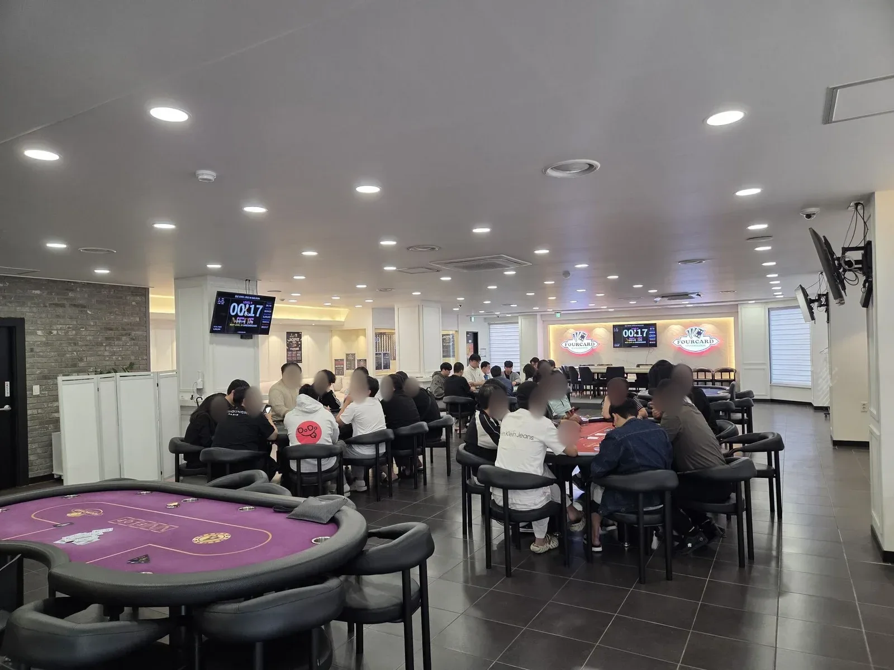
포카드는 대회를 공지로 끝내지 않고 예약, 참여, 랭킹까지
운영 흐름으로 묶어 매장 운영에 활용할 수 있게 합니다
커뮤니티와 정기 게임 문화가 반복 방문을 만듭니다
요일별·월간 대회로 수요를 만드는 운영이 가능합니다
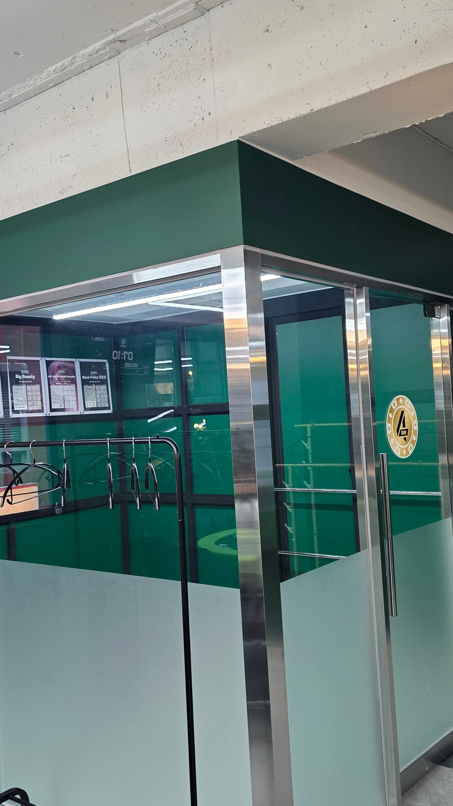
공식 일정 안내 — 지역과 매장별 대회 일정을 공식 사이트에서 확인할 수 있도록 정리합니다
참가 등록·예약 — 선수 등록과 대회 예약 경로를 제공해 현장 접수에 필요한 흐름을 줄입니다
포인트·랭킹 확인 — 참여 기록과 랭킹이 다음 방문의 동기가 됩니다
상담 전에 정보공개서 등록 금액부터 직접 확인하실 수 있습니다
21,500,000원
부가세 포함 금액입니다. 계약이행보증금은 부가세가 없고 계약 종료 시 반환됩니다. 가맹금은 서울보증보험 가맹점 피해보상보험으로 예치됩니다.
57,200,000원
99제곱미터 · 약 30평 기준 · 초도 물품 포함. 면적과 점포 상태에 따라 달라지는 추정 금액이며 냉난방, 소방, 전기·가스, 음향, CCTV, 조명, 주방 배수, 외부공사, 인허가 비용은 별도입니다.
78,700,000원
99제곱미터 기준이며 점포 임대비용은 별도입니다.
위 금액은 포카드 정보공개서(등록번호 20211907, 최종 등록 2025년 3월 24일)를 근거로 한 것이며, 점포 위치·규모·설비 조건에 따라 실제 지불 금액과 차이가 생길 수 있습니다. 정확한 금액은 상담에서 점포 조건을 확인한 뒤 안내해 드립니다.
실제 매장 자료의 평균과 범위를 정보공개서 수치로 확인하실 수 있습니다
가장 높은 매장과 낮은 매장의 차이가 7배가 넘습니다. 그래서 점포를 계약 전에 함께 검토합니다. 매출액은 가맹점사업자별로 물품 공급액, 시장 상황, 점주의 노력 등에 차이가 있기 때문에 달라질 수 있습니다. 따라서 위 매출액이 귀하가 올릴 수 있는 미래 수입과 같지 않을 수 있다는 점을 유의하시기 바랍니다. 포카드 정보공개서(등록번호 20211907) 기준이며, 매출액 추정에 사용한 자료는 가맹본부 사무실에서 열람하실 수 있습니다.
카드, 칩, 테이블과 의자 등 운영에 필요한 장비를 매장 규모에 맞춰 공급합니다
초도 물품 3,300,000원 · 테이블·의자 12,100,000원
외부 간판과 내부 사인을 점포 조건과 브랜드 기준에 맞춰 적용합니다
간판·사인 예상액 5,500,000원
a. 점포·규모 확인 — 면적과 테이블 수를 확인합니다
b. 품목·수량 확인 — 필요 물품과 실제 수량을 맞춥니다
c. 발주·납품 확정 — 계약서와 발주서로 범위를 확정합니다
위 금액은 정보공개서상 99제곱미터, 약 30평 기준 예상액이며 점포 위치, 규모, 설비와 실제 주문 수량에 따라 달라질 수 있습니다. 최종 공급 범위, 금액과 납품 일정은 계약서와 발주서로 확정됩니다.
홀덤 라운지는 테이블이 들어가는 순간부터 승부가 납니다
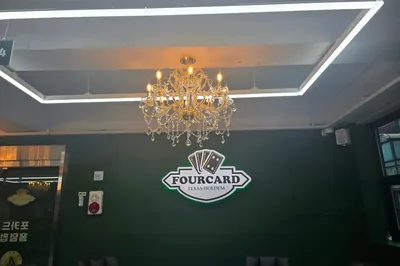
1희망 지역과 예산, 점포 보유 여부를 확인합니다
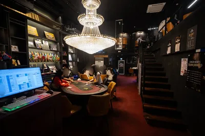
2후보 점포의 현장 조건과 주변 시장을 확인합니다
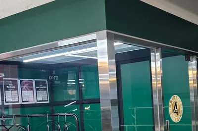
3기존 매장과의 상권 중복과 접근성을 살핍니다
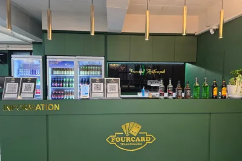
4면적과 층수, 테이블 배치와 직원 동선을 확인합니다
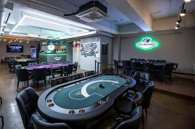
5조사 결과를 바탕으로 출점 가능 여부를 안내합니다
최종 점포 선정과 임대차 계약은 가맹희망자 책임으로 진행되며, 본사는 조사와 검토 결과를 제공합니다.
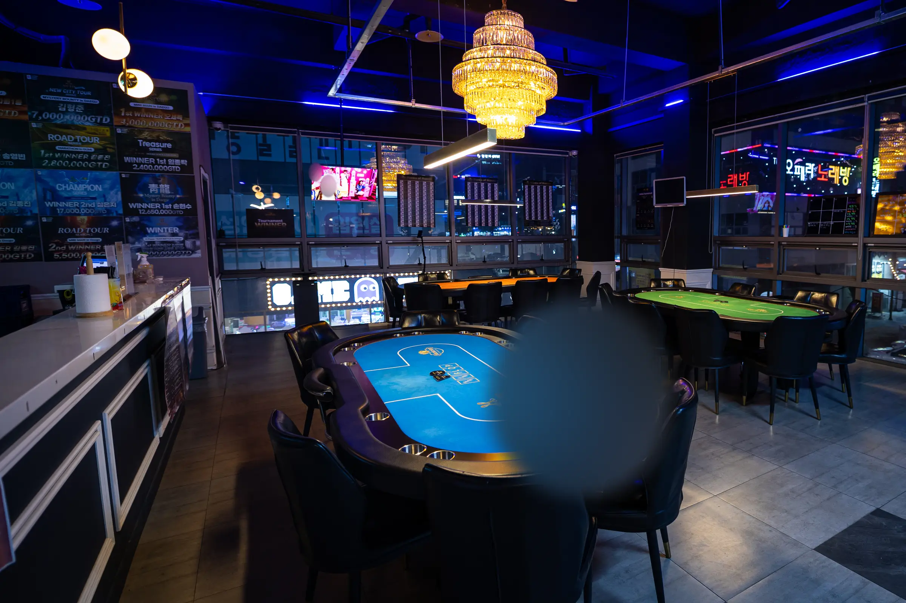
상담 → 상권검토 → 정보공개서 제공 → 계약 → 시공·교육 → 오픈 → 운영 안정화
희망 지역, 예상 시기,
점포 보유 여부와 예산을 확인합니다
담당자가 현장 조사와 시장 분석을
진행하고 후보지를 도출합니다
정보공개서와 가맹계약서를 제공하고
14일이 지난 후에 계약합니다
계약을 체결하고 가맹금을 예치해
오픈 일정을 확정합니다
테이블 배치를 기준으로 시공하고
운영 교육을 함께 진행합니다
초기 운영이 자리 잡을 때까지
현장에서 함께 점검합니다
공식 대회 사이트와 가맹점 운영 화면을 구분해 안내합니다
가맹점 운영을 위한 전용 관리 화면
운영 중지역별 대회 일정과 진행 정보
운영 중선수 등록과 대회 예약 경로
운영 중참여 기록과 포인트, 순위 확인
운영 중공식 공지와 대회 결과 소식
운영 중매장·대회·랭킹·회원·알림을 묶는 구조
개발 중포카드는 대회를 공지로 끝내지 않고 예약, 참여, 랭킹까지 운영 흐름으로 묶어 드립니다.
현재 이용 가능 가맹점 ERP와 포카드 공식 대회 사이트 · 개발 단계 멤버스 앱 구조. 현재 공개 출시된 앱은 아니며, 공개 범위와 제공 기능은 개발 및 운영 상황에 따라 달라질 수 있습니다.
가맹 상담 전 궁금한 점을 먼저 확인하세요
99제곱미터(약 30평) 기준으로 가맹본부 예치금 21,500,000원과 매장 조성 비용 57,200,000원을 합해 78,700,000원입니다. 점포 임대비용은 별도이며, 점포 위치와 설비 조건에 따라 달라질 수 있습니다.
냉난방, 소방, 전기·가스, 음향, CCTV, 조명, 주방 배수, 외부공사, 인허가 비용은 별도입니다. 임대 보증금과 권리금, 철거 비용도 별도로 확인하셔야 합니다.
가맹비 11,000,000원, 최초 교육비 5,500,000원, 계약이행보증금 5,000,000원입니다. 계약이행보증금은 부가세가 없고 계약 종료 시 반환됩니다.
월 계속가맹금 880,000원입니다. 계약기간은 5년이며 재계약 시 추가 납부금은 없습니다.
전국 8개 지역에 29개 매장이 있습니다. 운영 중인 매장은 26개이고 3개 매장이 오픈을 준비하고 있으며, 누적 개설 기준으로는 30호점을 돌파했습니다.
정보공개서 기준 연간 평균 매출액은 실제 19개 매장 기준 126,558,000원입니다. 가장 높은 매장 369,000,000원, 가장 낮은 매장 49,000,000원으로 차이가 큽니다. 위 매출액이 귀하가 올릴 수 있는 미래 수입과 같지 않을 수 있다는 점을 유의하시기 바랍니다.
있습니다. 정보공개서와 가맹계약서를 제공받은 날부터 14일이 지난 후에 가맹계약을 체결할 수 있습니다. 법정 숙려기간입니다.
없습니다. 현금 베팅과 환전 없이 운영합니다. 청소년 출입 제한과 연령 확인을 운영 기준으로 두고 있습니다.
FOURCARD 가맹문의
수집 항목 성함, 연락처 · 수집 목적 가맹 상담 연락 및 출점 가능 여부 안내
보유 기간 상담 종료 후 1년, 기간 경과 시 지체 없이 파기 · 처리 주체 가맹본부 FOURCARD (대표 임희수 · 사업자등록번호 315-23-05662)
동의를 거부하실 수 있으며, 이 경우 전화(010-9954-8399)로 상담을 신청하실 수 있습니다.